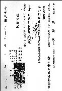

| Panorama d'événements |
La cassette vidéo du concert «Un Monde… de paix par la musique» à Tokyo au Japon, avait été programmée pour le 2 octobre 1999, et les pratiquants locaux avaient à peine un mois pour finir toutes les annonces, articles, promotions et autre travail préalable. Il nous semblait avoir perdu la course contre la montre, mais il s'est avéré que tout s'est déroulé tranquillement, comme si cela avait été pré-arrangé.
Notre première tâche consistait à produire des affiches annonçant l'événement. Nous voulions les faire imprimer en Corée, où ce serait moins cher, mais cela devait être fait en une semaine. Comment pouvions nous le faire ? Par chance, une soeur initiée à Kyushu, au sud du Japon, nous a contacté en disant, " J'ai une semaine de vacances et je compte visiter la Corée ". La Corée ? Quelle coïncidence ! Le lendemain, nous avons envoyé par mail le dessin pour l'affiche à Séoul et demandé à la soeur qui partait, de se mettre en contact avec le groupe d'édition en Corée pour ramener les imprimées avec elle. Après son arrivée à Séoul, elle nous a appelé à minuit et nous a dit, " Pas de problème ! Je peux rapporter les affiches au Japon. " De ce fait, les posters étaient affichés dans les stations de métro de Tokyo une semaine avant le concert.
Maintenant, nous avions une tâche plus difficile, spécialement pour une équipe inexpérimentée dans la production de cassettes vidéos avec des sous-titres japonais. De plus, nous avions deux cassettes vidéos de conférences qui avaient besoin d'être traduites dans un court laps de temps. Juste quand nous nous demandions comment rendre ce projet réel à temps, une soeur du groupe de traduction de Corée a appelé et demandé combien de temps il nous fallait pour finir le travail au Japon. Nous avons répondu honnêtement que cela prendrait probablement deux mois, puisque nos trois traducteurs étaient inexpérimentés et avaient des emplois à temps plein. La soeur coréenne s'est rappelée qu'un messager Guan Yin avait une fois demandé au groupe de traduction coréen de se mettre à disposition de leurs homologues japonais, si le besoin se faisait sentir. L'équipe de Corée s'en est rappelée et a honoré sa promesse en commençant à travailler immédiatement. Nous leur avons exprimé notre gratitude et leur avons répondu que nous ferions de notre mieux pour finir le travail. Cela nous a pris seulement quatre jours pour traduire la première cassette et trois jours pour la seconde. Les deux cassettes ont été envoyées par mail à Formose pour la vérification et le traitement.
Les choses se déroulaient si bien que nous avons commencé à nous détendre un peu jusqu'à ce qu'un coup de fil de Formose nous secoue de nouveau. On nous disait que nous avions travaillé sur une version ancienne. Nous devions attendre une autre semaine avant de recevoir les nouvelles éditions pour travailler dessus. Dès qu'elles sont arrivées, nous nous sommes mis à faire les ajustements et fixer les lignes de coupure pour que les sous-titres puissent tenir dans l'écran. Nous devions travailler rapidement parce que la soeur de Formose qui devait coordonner les sous-titres aux images partait dans trois jours pour la célébration du festival de la lune en Floride et ne revenait que trois jours avant le concert.
Nous n'avons pas perdu de temps pour commencer. Dans les trente heures suivantes, notre équipe a terminé toutes les autres tâches pour se concentrer sur ce travail stimulant. Quand la traduction a été envoyée par courrier électronique à la soeur de Formose pour la vérification, Formose venait de subir un tremblement de terre important. Malgré les nombreux après coups et les longues heures de coupure de courant, la soeur a vérifié la traduction avant de partir pour les Etats-Unis. Le groupe de Formose a alors complété le travail qui suit la production et la cassette est arrivé la veille du concert. Pourtant, nous ne pouvions pas encore nous détendre et nous réjouir. Une des boîtes en plastique avait été cassée lors de l'envoi et nous n'étions pas sûr que la cassette fonctionnerait correctement. Une heure avant le concert, la personne qui s'occupait de la conférence a acheté une nouvelle boîte pour la remplacer, a examiné et ajusté avec soin la cassette avant de la projeter.
Pendant le concert, les images éclatantes sur le grand écran et la belle musique de fond a profondément touché l'assistance. Certains étaient même émus jusqu'aux larmes. Et ceux qui ont pris part au travail savaient que c'était le soutien et l'aide de l'Amour Suprême qui avait rendu ce moment possible. Nous avons appris à travers ce travail à avoir foi et mettre notre mental de côté, puisque le travail a été fini juste à temps. Les amis pratiquants locaux ont renforcé leurs liens et ont trouvé une cohésion entre eux. Nous avons profondément apprécié le soutien que nous avons reçu des pratiquants des autres pays qui nous ont aidé à accomplir ce travail.
Le concert a aussi rapporter des fonds d'un montant de 287000 Yen (85260$NT ou 2708 $US) pour les victimes du tremblement de terre de Formose. La contribution a été donné à la Fondation de Secours et de Compassion Bouddhiste Tzu Chi.
|  | Reçu de la Fondation de Secours et de Compassion Bouddhiste Tzu Chi pour l'aide financière de 85260 $NT faite par le centre japonais de l'Association Internationale Suprême Ching Hai pour les victimes du tremblement de terre à du 21 septembre à Formose. |